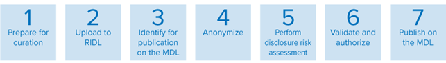

1 Introduction
Key definitions
Microdata is data on the characteristics of statistical units of a population, such as individuals, households, or establishments, collected by a census, survey, or registry.
Data curation is the principled and controlled treatment, organization and integration of data from various sources to systems where it is preserved, maintained, discoverable and accessible for re-use. The end goal of curation is to make data ready for analysis. For the purposes of UNHCR’s work, data curation includes uploading data and metadata to one of UNHCR’s data libraries and may also include treating data for errors and anonymization.
1.1 Purpose and objective
The purpose of this handbook is to provide detailed technical guidance for Data Curators on the curation of personal microdata of PoCs. The objective is to ensure that the implementation of the Data Curator role is in line with the Curation AI and done in a consistent manner and following best practices.
Note that any mention of microdata or microdataset or, more generally, data or dataset refers to personal microdata of PoCs unless otherwise stated.
1.2 Audience
The primary audience is UNHCR personnel performing the Data Curator role in the curation of microdata of PoCs. The handbook was written with the assumption that anyone using it already has a basic to advanced knowledge of data treatment, statistics, anonymization and statistical applications such as R and Stata.
Secondary audiences of this handbook include any UNHCR personnel involved in data collection, processing and dissemination and any UNHCR personnel involved in the data curation process who are interested in or need to know specific details on how microdata is curated. This includes Personal Data Controllers, Data Protection Focal Points and Data Providers.
1.3 Scope
This handbook includes technical guidance on the following aspects of data curation within the scope of what is performed by UNHCR under the Curation AI: data checking and preparation, anonymization, disclosure risk assessments and metadata development.
This handbook does not include guidance on data collection, processing and analysis for primary use, even though some of the techniques used may also be transferable to those stages, particularly related to data checking and preparation. Finally, it does not include technical guidance on the use of RIDL or the MDL as this guidance is already available from the developers. They can be found below:
• RIDL: https://im.unhcr.org/ridl/
• MDL: will be added soon because the platform is undergoing an upgrade
In the context of UNHCR’s personal microdata of PoCs, the microdata curation process involves seven steps as follows:

This handbook focuses on the technical aspects of steps three to seven, starting after raw or clean data have been downloaded from RIDL to be checked, prepared and anonymized for publication on the MDL.
Different versions of a microdataset are used and/or produced throughout the curation process. They are generally categorized as raw, clean and anonymous. The following table from the Curation AI paragraph 4.3.3 provides a definition of each version and an overview of their purpose.
| Version | Definition | Purpose | Location |
|---|---|---|---|
| Raw | Personal or non-personal data in its original format as produced without any edits. | Internal reference and use | RIDL and other systems and tools like proGres v4, KoBo, etc. |
| Clean | Personal or non-personal data that has been processed, i.e., structured, treated for errors and verified1 | Internal re-use by UNHCR at the country, regional and/or global levels | RIDL and other systems and tools like proGres v4, KoBo, etc. |
| Anonymous | Clean personal data that has undergone a technical process of removing or modifying all personal identifiers and codes in such a way that individual data subjects cannot be identified by any means reasonably likely. This process is complemented by other measures to render the risk of re-identification insignificant2 | Internal re-use by UNHCR at the country, regional and/or global levels | RIDL and the MDL |
| Re-use by external actors for programming, analysis, research, advocacy, etc. |
1.4 Contact
If you have questions that are not answered in this handbook, please contact microdata@unhcr.org.
Clean microdata may or may not include direct identifiers. However, clean microdata is still considered personal data until rendered anonymous. Two versions, one with direct identifiers and one without direct identifiers, may need to be catalogued on RIDL. Consider the following example: A country operation needs a version of a clean dataset with direct identifiers for its own use, and it would also like to share a clean version of the dataset without direct identifiers (pseudonymized) for use by other country operations, regional bureaux and/or headquarters. The country operation would catalogue two versions of the clean data on RIDL: one with direct identifiers with more restricted access and one without direct identifiers with less restricted access.↩︎
See full definition in the Curation AI↩︎